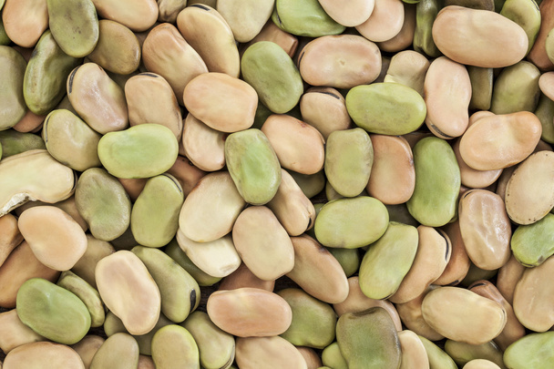

Інформація на сайті має виключно ознайомчий характер і не є медичною порадою. Використовуючи сервіс, ви берете відповідальність за своє здоров'я на себе. Перед будь-якими змінами в харчуванні обов'язково порадьтеся з лікарем.
Адміністрація сайту не несе відповідальності за будь-які наслідки, прямі або непрямі, що можуть виникнути в результаті використання інформації з цього сайту.
Ваш персональний шлях до здоров'я та ідеальної форми.
Nutriway
Куточок освіти
Тарілка харчування
Це модель для балансу в раціоні: половину порції мають складати овочі та фрукти. Іншу половину слід порівну розділити між корисними білками та цілозерновими гарнірами.
Вуглеводи
Це головне джерело енергії, тому надавайте перевагу цілозерновим продуктам, які дають тривалу ситість. Намагайтеся мінімізувати вживання цукру та білого борошна.
Білок
Основний будівельний матеріал для м’язів та клітин організму. Найкращими джерелами є риба, птиця, бобові та горіхи.
Жири та холестерин
Жири є важливим джерелом енергії та необхідними жирними кислотами. Важливо обирати здорові джерела жиру, такі як оливкова олія, авокадо та риба.
Овочі та фрукти
Вони повинні займати половину вашої тарілки під час кожного прийому їжі. Це головне джерело клітковини для гарного травлення.
Вітаміни
Життєво важливі елементи для імунітету та обміну речовин. Найкраще отримувати їх із різноманітного, кольорового раціону, а не з таблеток.
Світ Nutriway
Nutriway — це сучасна онлайн-платформа, яка допомагає створити ідеальний план харчування на основі аналізу потреб вашого організму. Сервіс автоматично розраховує індивідуальні норми калорій, білків, жирів, вуглеводів та вітамінів, перетворюючи сухі цифри на смачне й збалансоване меню. Головна перевага Nutriway полягає в уважному ставленні до вашого здоров’я: алгоритм суворо враховує наявні захворювання та медичні протипоказання при виборі страв. З Nutriway турбота про здоров'я стає простою та системною, позбавляючи вас необхідності самостійно вираховувати кожен грам їжі.
Корисна Інформація
Дізнайтеся більше про те, як працює ваш організм та які звички допоможуть вам почуватися краще.
ХАРЧУВАННЯ
Правило тарілки
Уявіть свою тарілку розділеною на частини. Половину повинні займати овочі та зелень, чверть — якісний білок (риба, м'ясо, яйця), а ще чверть — складні вуглеводи (каші, цільнозерновий хліб). Такий підхід забезпечує баланс без підрахунку калорій.
СПОРТ
Чому важлива активність?
Рух — це не тільки про спалювання калорій. Регулярна активність знижує рівень кортизолу (гормону стресу), покращує чутливість до інсуліну та зміцнює серцево-судинну систему. Навіть 30 хвилин ходьби на день можуть змінити ваше життя.
Наша Місія
Nutriway створений для того, щоб зробити здоровий спосіб життя доступним та зрозумілим. Ми віримо, що здоров'я починається з розуміння потреб власного тіла, а не з жорстких обмежень.
Тарілка здорового харчування
Це наочна модель, що показує рекомендовані пропорції продуктів. Вона допомагає збалансувати раціон без жорстких дієт та обмежень.
Пропорції на вашій тарілці
1/2
Овочі та Фрукти
Їх потрібно споживати найбільше. Забезпечують вітамінами, клітковиною та антиоксидантами. Чим різнокольоровіше — тим краще.
Картопля не рахується!
1/4
Цільнозернові
Крупи, хліб і каші з цільного зерна. Дають тривале відчуття ситості та не викликають різких стрибків цукру.
1/4
Корисні Білки
Риба, птиця, бобові та горіхи. Обмежуйте червоне м’ясо та уникайте перероблених продуктів (ковбас).
Сніданок: Омлет з овочами та цільнозерновим хлібом, фрукти, кава.
Обід: Рагу з куркою та овочами, бурий рис, зелений салат.
Вечеря: Суп-пюре, риба на пару, салат, йогурт.
Літня людина (65+)
Сніданок: Йогурт з вівсянкою та ягодами, трав'яний чай.
Обід: Легкий суп, риба, пюре з броколі, оливкова олія.
Вечеря: Варена курка, тушкована капуста, хліб, компот без цукру.
Практичні поради
Плануйте меню разом з родиною.
Починайте їсти з овочів (салату).
Готуйте вдома — це контроль над інгредієнтами.
Замініть солодкі напої водою з лимоном.
Шкідливі снеки замініть на горіхи або йогурт.
Не забувайте про рух та активність.
Часті запитання
● Що це за модель і навіщо вона?
Це не дієта, а наочна модель для збалансованого харчування. Вона допомагає отримати всі необхідні речовини без складних підрахунків калорій.
● Чи потрібні жири?
Так, але корисні. Обирайте ненасичені жири (олія, горіхи, риба) для серця і мозку. Уникайте трансжирів (випічка, маргарин).
● Скільки тарілок їсти на день?
Залежить від вашого віку та активності. Можна їсти 3-5 разів, головне — дотримуватись пропорцій «здорової тарілки» при кожному прийомі їжі.
Овочі та фрукти: Фундамент вашого здоров'я
Вони не просто їжа, а джерело життя. Вітаміни, мінерали та клітковина працюють разом, щоб захистити ваше серце, зміцнити імунітет та подарувати енергію.
Чому це так важливо?
Овочі та фрукти — це невід’ємна частина здорового раціону. Дослідження підтверджують, що регулярне споживання рослинної їжі суттєво впливає на тривалість та якість життя.
Здоров'я серця та судин
Достатнє споживання овочів допомагає знизити артеріальний тиск та зменшує ризик інфаркту й інсульту. Калій та магній, що містяться в них, підтримують роботу серцевого м'яза.
Контроль ваги
Завдяки низькій калорійності та великій кількості клітковини, овочі створюють відчуття ситості без зайвих калорій. Це ідеальний інструмент для підтримки здорової маси тіла.
Захист клітин
Антиоксиданти та фітонутрієнти захищають клітини організму від пошкоджень та запальних процесів, знижуючи ризик розвитку хронічних захворювань та деяких видів раку.
Основні поживні речовини
Продукт
Ключові речовини
Вплив на здоров’я
Морква
β-каротин, клітковина
Підтримує зір та імунітет
Броколі
Вітаміни C, K, фолат, калій
Зміцнює кістки та серце, протиракова дія
Помідор
Лікопін, вітамін C
Потужний антиоксидант, захист шкіри
Яблуко
Пектин, калій, вітамін C
Корисне для мікрофлори та рівня холестерину
Шпинат
Залізо, магній, вітамін K
Кровотворення та здоров’я кісток
Чорниця
Антоціани, вітамін C
Покращує пам’ять та зір
🎨 Магія кольору
Експерти радять "їсти різнокольорово". Кожен колір вказує на унікальні фітохімічні речовини: червоний (лікопін) для серця, помаранчевий (каротин) для зору, фіолетовий (антоціани) для мозку, а зелений — для очищення та захисту клітин.
Практичні поради
БАЛАНС
Правило тарілки
Уявіть свою тарілку розділеною навпіл. Половину повинні займати овочі та зелень, чверть — якісний білок (риба, м'ясо), а ще чверть — складні вуглеводи. Цей простий візуальний метод забезпечує баланс нутрієнтів без нудного підрахунку калорій.
ЗВИЧКА
На видному місці
Ми їмо те, що бачимо. Складайте фрукти у прозору вазу на столі або розміщуйте нарізані овочі на рівні очей у холодильнику. "Чаша з яблуками" на столі значно підвищує шанси на корисний перекус.
КУЛІНАРІЯ
Овочі всюди
Додавайте овочі навіть туди, де їх зазвичай немає. Шпинат в омлет, терта морква в котлети, гриби в соус до пасти. Це робить страву об’ємнішою, ситнішою та менш калорійною.
ПЛАНУВАННЯ
Розумні покупки
Плануйте хоча б одну овочеву страву на день перед походом у магазин. Купуйте сезонні продукти — вони найсмачніші. І пам'ятайте: заморожені овочі взимку часто корисніші за "свіжі" з теплиць.
Питання та відповіді
● Чи шкідливі фрукти через цукор?
Ні. У цілих фруктах цукор "запакований" разом з клітковиною, вітамінами та водою. Це забезпечує повільне всмоктування і насичення, на відміну від цукерок чи солодких напоїв.
● Свіжі чи заморожені?
Обидва варіанти чудові. Заморожування часто відбувається на піку зрілості, тому такі овочі можуть зберігати навіть більше вітамінів, ніж ті, що довго лежали на полиці.
● Чи можна пити соки?
Краще надавати перевагу цілим плодам. Сік позбавлений клітковини, тому він дуже швидко підвищує рівень цукру в крові і не дає відчуття ситості.
Білок: Будівельний матеріал тіла
Це не просто їжа для м'язів. Це фундамент, з якого будується кожна клітина вашого організму: від шкіри та кісток до гормонів та імунітету.
Чому це так важливо?
Білок складається з амінокислот — «цеглинок» життя. Він критично важливий для відновлення тканин, вироблення ферментів та захисту організму від інфекцій.
Регенерація та ріст
Сприяє відновленню пошкоджених тканин і розвитку м'язів. Це критично важливо не тільки для спортсменів, але й для дітей у період росту та відновлення після травм.
Структурна підтримка
Зміцнює скелет, шкіру, волосся та нігті. Достатня кількість білка запобігає втраті м'язової маси, яка природно відбувається з віком (саркопенія).
Імунітет та метаболізм
Антитіла, що борються з вірусами, мають білкову природу. Також білок є основою для гормонів (наприклад, інсуліну) та ферментів, що регулюють обмін речовин.
Вміст білка в продуктах (на 100 г)
Продукт
Вміст білка
Тип джерела
Сир Пармезан
36 г
Тваринний
Соя (суха)
36 г
Рослинний
Куряча грудка
31 г
Тваринний
Яловичина / Індичка
26-29 г
Тваринний
Тунець / Сардини
23-25 г
Тваринний
Мигдаль
21 г
Рослинний
Лосось
20 г
Тваринний
Гарбузове насіння
19 г
Рослинний
Яйце (1 шт)
~6 г
Тваринний
Сочевиця / Квасоля (варені)
8-9 г
Рослинний
Практичні поради
БАЛАНС
Рівномірність
Не їжте весь білок за один раз. Розподіляйте його на кожен прийом їжі для стабільної енергії та кращого засвоєння.
РІЗНОМАНІТТЯ
Міксуйте джерела
Поєднуйте тваринні та рослинні білки. Наприклад, курка з кіноа або салат з горіхами. Це забезпечить повний спектр амінокислот.
ПЕРЕКУС
Здорові перекуси
Замініть печиво на грецький йогурт, горіхи або хумус. Це дасть відчуття ситості набагато довше, ніж прості вуглеводи.
СПОРТ
Для активних
Спортсмени потребують більше: 1.2–2 г/кг. Особливо важливо споживати білок після тренування для відновлення м'язів.
Питання та відповіді
● Скільки білка потрібно літнім людям?
Літнім людям рекомендовано трохи більше норми: 1–1.2 г на 1 кг ваги. Це допомагає запобігти втраті м'язової маси та зберегти силу, що критично важливо для активного довголіття.
● Чи можна набрати норму без м'яса?
Так! Але потрібно бути уважнішим. Рослинні білки (окрім сої та кіноа) часто не мають повного набору амінокислот. Тому вегетаріанцям важливо комбінувати різні джерела: бобові, горіхи, насіння та цільні злаки протягом дня.
● Що щодо вагітних та жінок, що годують?
Потреба у білку зростає, оскільки він потрібен для розвитку дитини та вироблення молока. Рекомендована норма становить 1.2–1.5 г на 1 кг ваги.
Вуглеводи: Основне джерело енергії
Вуглеводи — органічні сполуки, що слугують для організму основним джерелом енергії. Вони є макронутрієнтами, які необхідно отримувати щодня для підтримання життєдіяльності.
Функції в організмі
Головна функція вуглеводів — енергетична. З них організм отримує половину добової енергії.
Енергія та рух
За високого навантаження вуглеводи стають джерелом глюкози для роботи м'язів і мозку. Надлишок енергії накопичується у вигляді глікогену в печінці та м'язах як запасне паливо.
Структурна роль
Входять до складу ДНК та РНК, відповідаючи за збереження генетичної інформації, а також є компонентами АТФ — енергії для всіх процесів.
Регуляція та травлення
Регулюють рівень цукру, рН клітин та обмін речовин. Сприяють нормальній мікрофлорі кишечника та зниженню рівня холестерину.
Обирайте продукти з цільнозернового борошна. Вони багаті на волокна, стимулюють травлення та підвищують ситість.
СВІЖІСТЬ
Овочі та фрукти
Вживайте їх свіжими. Це натуральне джерело вітамінів та складних вуглеводів.
ОБМЕЖЕННЯ
Менше цукру
Уникайте оброблених продуктів. Надлишок цукру веде до ожиріння та діабету.

СИЛА
Бобові
Включайте в раціон бобові. Це комбінація рослинного білка та складних вуглеводів для тривалої ситості.
Питання та відповіді
● Яка норма вуглеводів на день?
Оптимально: 45-65% раціону. Для 2000 ккал це становить 225-325 г на день.
● Прості чи складні вуглеводи?
Прості (цукри) швидко підвищують глюкозу, але можуть викликати стрибки інсуліну. Складні (овочі, каші) дають стабільну енергію та ситість. Віддавайте перевагу складним.
● Скільки потрібно спортсменам?
Для набору маси рекомендується 5-7 г на 1 кг ваги. Наприклад, атлету вагою 80 кг потрібно 400-560 г вуглеводів на день.
Корисні жири: Союзники вашого здоров'я
Корисні жири — це не просто джерело енергії, а союзники вашого здоров'я. Вони не забивають судини, а навпаки, допомагають серцю та мозку.
Ключові функції ліпідів
Засвоєння вітамінів
Без жирів організм не здатний засвоїти жиророзчинні вітаміни A, D, E та K.
Клітинна структура
Вони є «будівельним матеріалом» для мембран усіх клітин тіла.
Захист та терморегуляція
Оберігають внутрішні органи від пошкоджень та допомагають підтримувати температуру тіла.
Зовнішній вигляд та настрій
Дефіцит жирів миттєво позначається на стані шкіри, рівні енергії та психоемоційній стабільності.
Денна норма споживання
Для підтримки здоров'я дорослим рекомендовано отримувати 20-35% від загальної калорійності з жирів.
~1 г
на 1 кг ваги
Ідеальної маси тіла.
10%
Насичені жири
Максимум для тваринних жирів, решта — рослинні.
!
Цікавий факт
Багато європейців перевищують норму (37-46%).
Найкращі джерела
Горіхи та насіння
•Грецький горіх: лідер за вмістом Омега-3.
•Фундук та мигдаль: нормалізують холестерин.
•Насіння льону та чіа: гормональний баланс.
•Гарбузове насіння: корисні для суглобів.
Овочі та фрукти
•Авокадо: джерело мононенасичених жирів.
•Обліпиха: унікальний набір кислот.
•Жовта морква та персик: вітаміни засвоюються з жирами.
Жири та схуднення: чи варто боятися?
Вживання жирів саме по собі не робить нас гладкими. До зайвої ваги призводить загальний надлишок калорій. Найбільшої шкоди завдають трансжири та перероблені продукти.
Поради щодо впровадження
ЗАМІНА
Замінюйте, а не додавайте
Замість масла використовуйте оливкову або авокадову олії.
РИБА
Їжте рибу
Вживайте жирні види (лосось, скумбрія) 2-3 рази на тиждень.
ДОДАВАННЯ
Збагачуйте страви
Додавайте горіхи, насіння або оливки до салатів та каш.
Часті запитання
● Які жири допомагають схуднути?
Авокадо, оливкова олія, горіхи та риба. Заміна насичених жирів на ці продукти прискорює спалювання жиру.
● Чи потрібні жири для шкіри?
Так. Омега-3 зволожують шкіру та запобігають запаленням (акне, екзема). Вони покращують еластичність та бар’єрні функції.
● Які жири потрібні жінкам?
Жінкам особливо важливі Омега-3 для гормонального балансу та здоров'я серця. Вони підтримують репродуктивну систему та покращують кровообіг.
● Як впливають жири на печінку?
Оливкова та лляна олія допомагають зменшити запалення та очищають печінку від токсинів. Це профілактика жирової хвороби печінки.
● Чи можна жири на сніданок?
Так (горіхи, авокадо, олія). Вони дають тривалу ситість. Наприклад: омлет з авокадо або вівсянка з насінням.
Вітаміни: Невидимі диригенти життя
Це органічні речовини, необхідні для функціонування організму. Вони відіграють роль «фону» для обміну енергії, росту й імунного захисту.
Жиророзчинні
(A, D, E, K). Розчиняються в жирах і можуть накопичуватися в печінці та тканинах.
Vit AVit DVit EVit K
Водорозчинні
(С і група B). Розчиняються у воді, не запасаються, надлишок виводиться із сечею.
Vit CB-Complex
Довідник вітамінів
Вітамін A
Ретинол
Важливий для «нічного» зору та здоров’я слизових. Підтримує імунітет.
ДЖЕРЕЛА:
Печінка, риб’ячий жир, морква, шпинат.
Вітамін C
Аскорбінова к-та
Потужний антиоксидант, синтез колагену, загоєння ран та імунітет.
ДЖЕРЕЛА:
Цитрусові, ківі, перець, броколі.
Вітамін D
Кальциферол
Засвоєння кальцію, здоров’я кісток та імунітет. Синтезується шкірою на сонці.